Exam 3 Study Guide
logistic regression
- Discrete and supervised
- Good for when dependent variable is binary (yes/no, red/blue, etc)
- Determines probability of the binary classification.

- compare with linear regression
- Logistic Predicts whether something is true of false, while linear predicts something of continuous size
- Linear fits a straight line, logistic fits an “S” shaped logistic curve
- Curve shows likelihood of discrete classifications
multi-layer neural networks
- Hidden Layers are which are neuron nodes stacked in between inputs and outputs, allowing neural networks to learn more complicated features (such as XOR logic)
Loss functions
tanh activation function and motivation
*forward propagation to compute output
- Compute activation of each hidden node by by taking the tanh of the weighted sum of inputs (summation(wi*x))
- Output = sum of hidden node activations * weights
Steps w/ example:
- Compute activation of each hidden node: 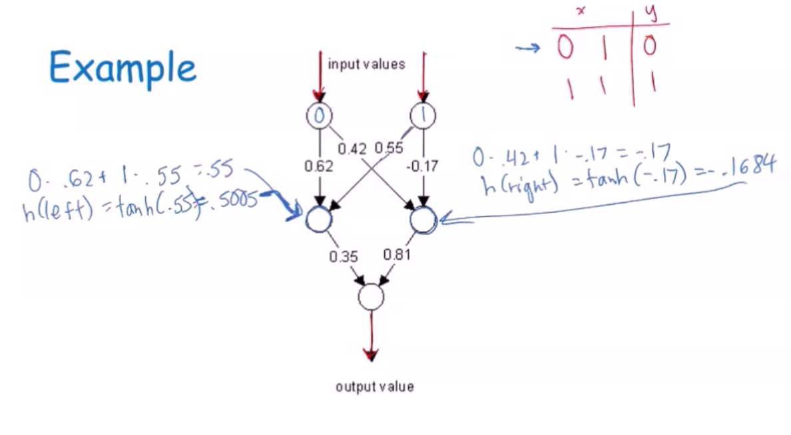
- Compute output value: 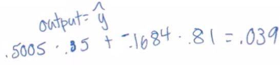
- Find error (expected - actual): 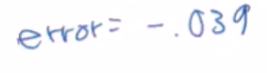
- In this example, the expected value was 0 (see table in first step). 0 - 0.039 = -0.039
backward propagation to compute weights
- Procedure to repeatedly adjust the weights of a multilayer perceptron to minimize the difference between actual output and desired output
- Backpropagation = gradient descent + chain rule
- En (error on nth example) = yn - summ(hixi)
Steps w/ example:
- Compute gradient change for weights from hidden to output nodes (g = eh) and new weights: 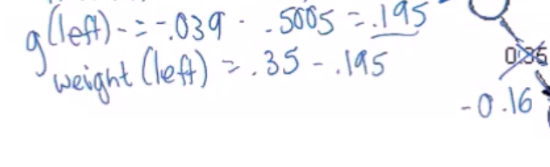 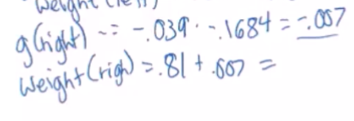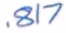
- Compute new weights from input to hidden: 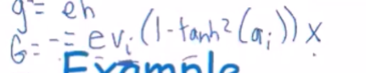 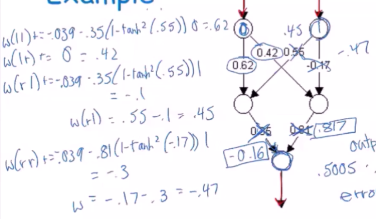
inductive bias
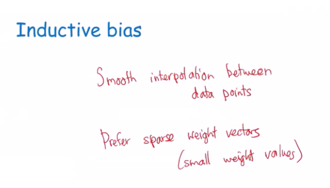
- Any two data points with same class values, any other points between them will have same class value
- Large weight values can make the network over adjust to minor differences. Alsso if some of the weights drop to 0, then they drop out and don’t affect function, which can be good to avoid overfit.
*hyperparameters and impact on underfitting, overfitting
- Number of layers
- Number of hidden
- Learning rate
- Activation function
- Weight initialization
- If weights can be reduced to 0, they can drop out and won’t affect function. This can be helpful to avoid overfitting.
- Stopping criteria (fixed number, epoch, convergence?)
- Learning rate controls how much of an adjustment you’ll make each epoch (const 0<x<1) 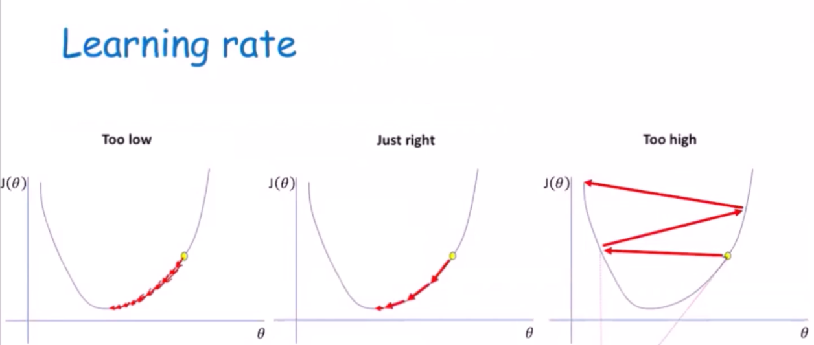
- Too high = underfit
- Too low = overfit
deep networks - large neural networks
- Is a subset of machine learning where artificial neural networks, algorithms inspired by the human brain, learn from large amounts of data.
- SImilarly to how we learn from experience, the deep learning algorithm would perform a task repeatedly, each time tweaking it a little to improve the outcome
- ‘Deep’ learning because the neural networks have various layers that enable learning

- Requires a lot of data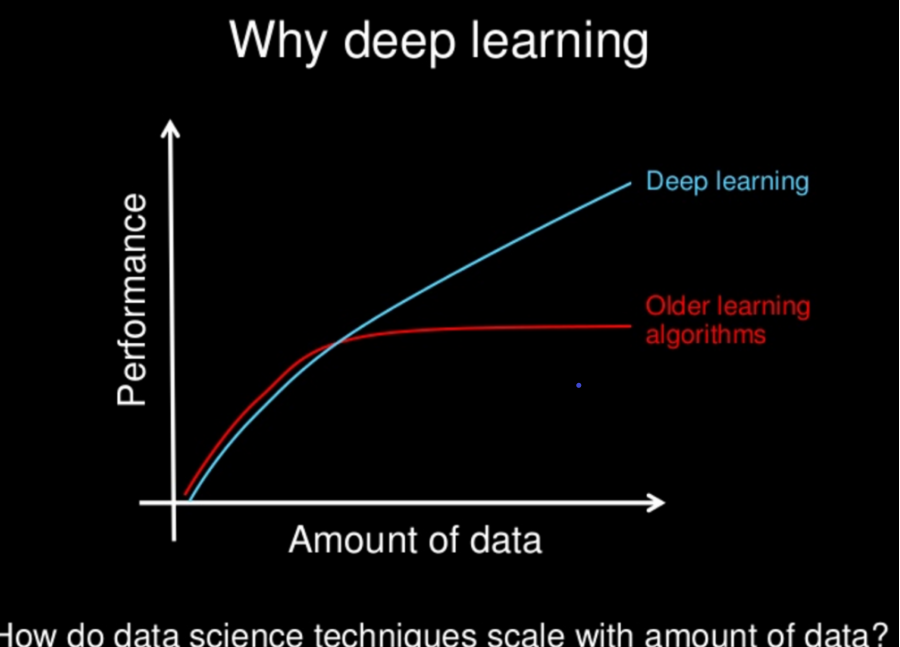
Convolutional Neural Networks
- Mostly used for image classification
- A CNN has inner convolutional layers, as well as non-convolutional layers
- The convolutional transforms input in a convolution operation
- Has a specialization to picking up patterns.
- The convolutional layers use filters to detect patterns
- The deeper the layers, the more sophisticated these patterns are, i.e detecting certain edges, shapes, colors, eyes, ears, scales, hair, and even full objects depending on how deep the layer is
- Pooling layers - also known as mean pooling or max pooling
- Using a grid example, one could use the mean (or max) value of a particular feature over a region of the image. The new grid is a lot smaller and has much lower dimensions.
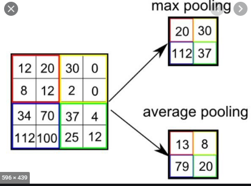
Convolution
- In mathematics convolution is a mathematical operation on two functions that produce a third function expressing how the shape of one is modified by the other
support vector machines: A supervised learning algorithm that can be used for classification and regression problems. To classify data, support vector machines make hyperplanes that best separate the data into different domains to classify it.
constrained optimization: The problem that SVM’s are dealing with. We want to optimize the hyperplane dividing the data with the largest margin possible, but we are constrained by making sure that there are no data points that are on the hyperplane, but are separated by the margin.
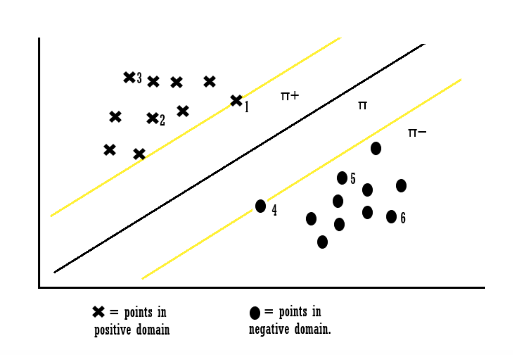
*hard margin: Cannot handle any outliers. Uses a slack parameter from each class to create the margins, but any points not within the correct area will be incorrectly classified.
*soft margin: Can handle outliers. Will skip a few when creating margins and selecting slack parameters, using Zeta as a parameter to classify problems that are ‘almost’ linearly separable.
*role of hyperparameter in overfitting and underfitting: The more outliers we ignore the more prone we are to underfitting, the more outliers we take into account the closer we are to overfitting.
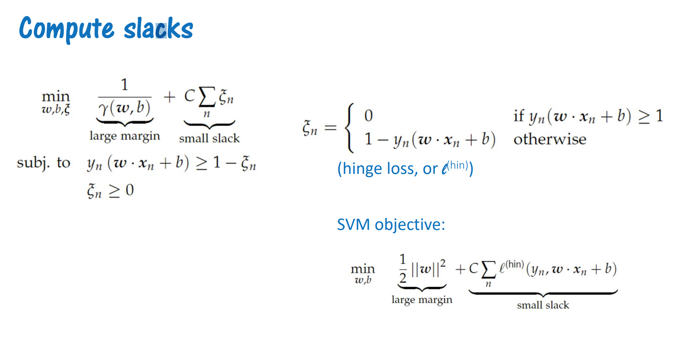
slack parameters: The points closest to the hyperplane. The margin is the distance from the vector points to the hyperplane.
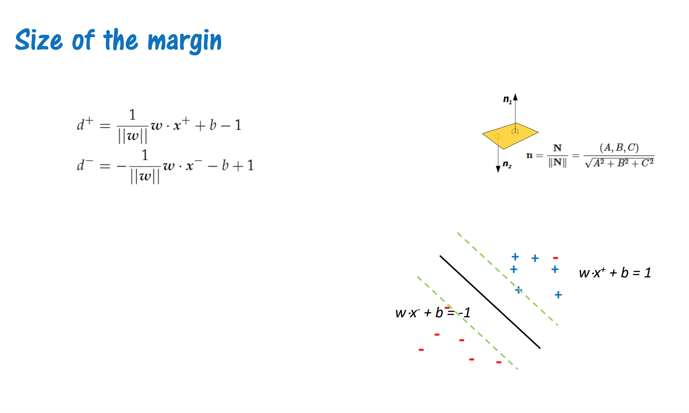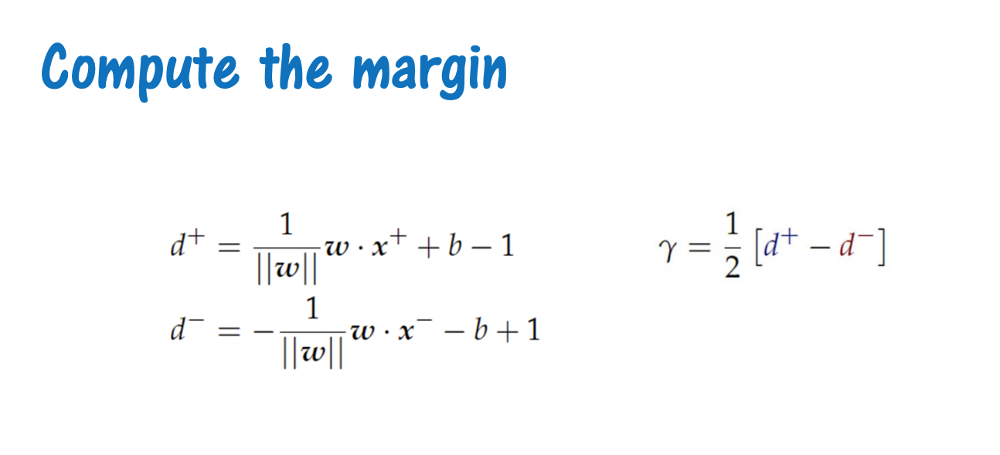
size of the margin: The larger the generally better the classification.
Kernels: The main hyperparameter for SVMs. This is how features are mapped onto some dimensional space. A function. Can use linear or polynomial functions, since some will work better than others in different feature space.
Ensemble Classifiers
- Combine multiple classifiers. Classifiers are each learning a function. Each model is trained independently then we use the models (base classifiers) to predict a class label through voting.
- On test example, everything gets a vote
- More +1 than -1 : output positive otherwise negative
- Classifiers don’t make the same over and over again. In the picture, because more models choose -1, the ensemble will choose -1
- Why use a team of classifiers?
- They tend to make different kinds of errors which gives higher accuracy overall. Usually the classifiers that make the wrong decision get outvoted.
- Prefer classifiers with high variance, as usually the collective answer from the base classifiers will be correct.
- N based classifiers, errors are uncorrelated, error rate is ε
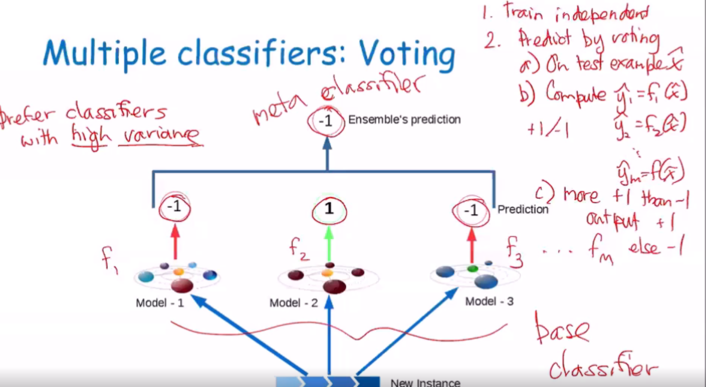
- You copy a subset of data from the original data set
- It is possible to copy the same data twice
- The new data set is sampled from the original, so they are all valid training points
- They will evaluate some of the same statistical properties as the original dataset
- Way to get multiple sets of data that resemble the original distribution
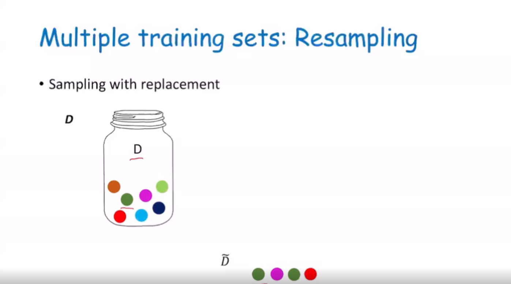
- Start with training data set D with N examples
- Use sampling with replacement to create M datasets D1, .. , Dm
- Each has size N
- Train separate classifier
- On each training set
- Combine (vote)
- Focuses on assigning more weights to data that was previously misclassified by the algorithm, so the weak learners become stronger
- Specific implementation of
*ways to establish diversity
k means++
cluster initiation, furthest first, probabilistic selection of cluster means
dimensionality reduction
principal component analysis, principal components
minimize data distance to line
maximize distance of projected points to origin
selecting components
*visualization of first component, additional components
overall
remember highlights of algorithms discussed throughout semester
NBC, linear regression, logistic regression, decision tree, knn
random forest, neural network, k means, boosting, SVM
*compare and contrast methods